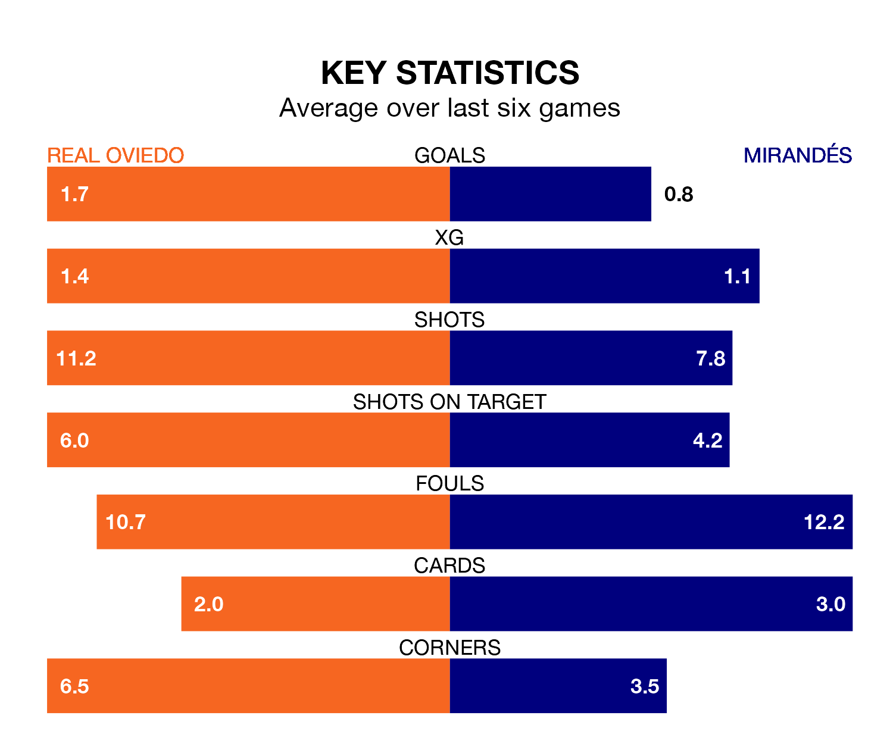

Real Oviedo are heavy favourites to keep all three points at home in Sunday lunchtime's kick-off against Mirandés.
Oviedo, who sit fifth in the Segunda División with 34 games played, are priced at 1.6 to seal victory at the Estadio Nuevo Carlos Tartiere.
Sitting 12 places and 17 points behind them in the table, Mirandés are 5.0 to win with *Betting Company*, while the draw is at 3.5.
With 44 goals in 34 games so far this season, Oviedo are scoring more than average in the league with 1.3 goals per game. And they are conceding fewer than average, letting in 29 goals at a rate of 0.9 per game.
Mirandés, meanwhile, are average scorers, with 1.1 goals per game. They have conceded 1.4 goals per game.
In the last 10 years, Oviedo and Mirandés have played each other on 14 occasions. Oviedo won six of them, Mirandés four, and they drew four times.
On average, Oviedo scored 1.4 goals and Mirandés 0.9 in those matches.
Their last meeting was on November 26, when Mirandés won 2-1 at home.
In Carlos Martín, the away side have one of the league's most on-form strikers so far this season. He has notched 13 goals in 32 appearances, to sit third in the scoring charts.
The hosts' top scorers, with eight goals each, are Borja Bastón and Francisco Sebastián Moyano Jiménez.
Oviedo are in good form in the Segunda División, with four wins and a draw from their last six games.
With a win and a draw over that period, Mirandés's form is much worse – they have taken four points from 18, compared to Oviedo's 13.
Oviedo's last match was on April 5, a 2-0 win against Elche CF, with Paulino de la Fuente Gómez and Santiago Colombatto getting the goals for Oviedo.
Mirandés lost 3-1 against Sporting Gijón last time out, on Sunday, with Juan María Alcedo Serrano on the scoresheet.
Updated: 14:47 (UTC), 09/04/24